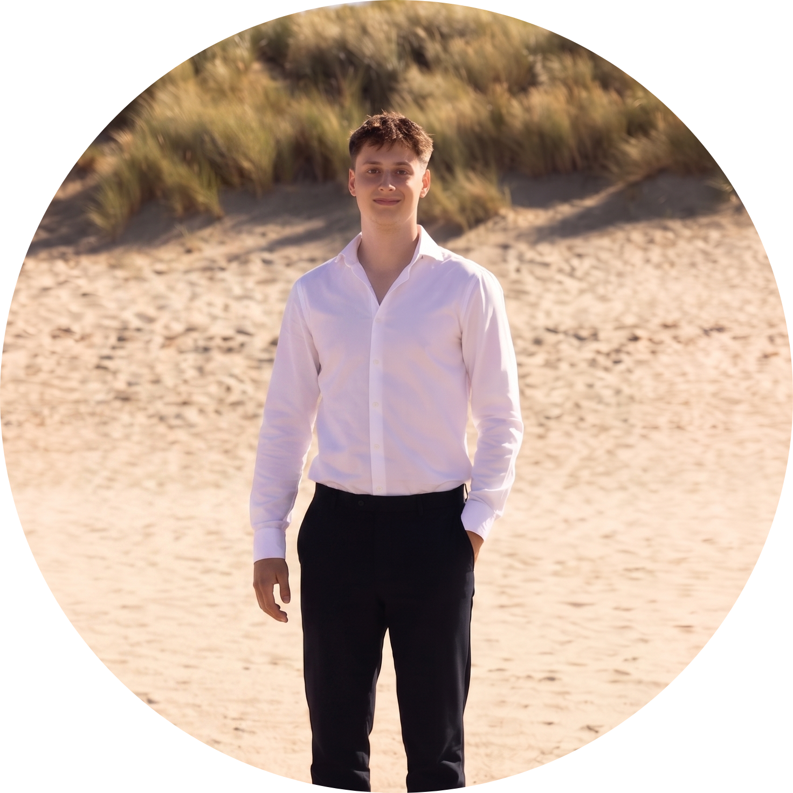

Hoi! Ik ben
Lucas van de Pol
Ik ben een student Informatica met een passie voor het bouwen van mooie, functionele applicaties. Ik ben nieuwsgierig, gedreven en leer elke dag bij.
Naast school ben ik veel bezig met het ontwerpen van mijn eigen app. Verder ben ik veel aan het werk en hou ik heel erg van sporten.
Op dit portfolio vind je een selectie van projecten waar ik trots op ben. Elk project heeft me iets nieuws geleerd en me een stap verder gebracht.
Student Informatica
Student Informatica op de Hogeschool Leiden en daarnaast bezig met mijn eigen projecten.
Hogeschool Leiden
De TU was voor mij iets te hoog gegrepen. Daarom heb ik mij aangemeld voor een HBO studie Informatica.
Computer Science & Engineering
Begonnen met de studie Computer Sciene & Engineering op de TU Delft.